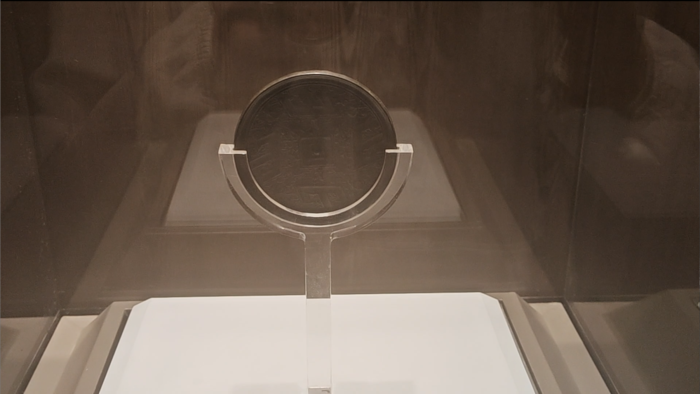
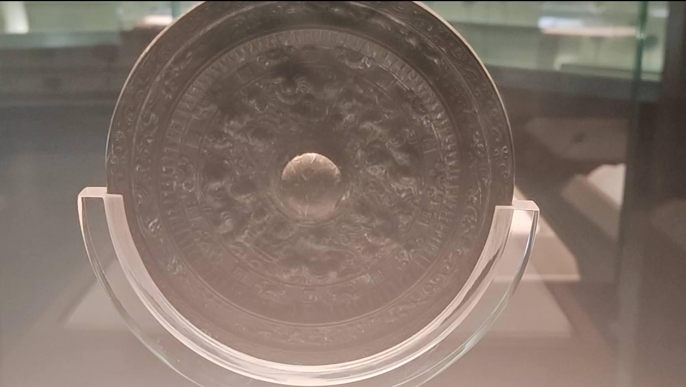
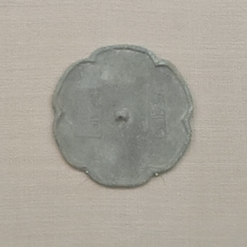

开端
中国发现最早的铜镜产生于 4000 余年前的新石器时代晚期。目前，鄂州出土的铜镜最早为战国时期的山字纹镜，这一时期的铜镜具有镜面平、内凹式卷缘、弦式钮、主纹叠压地纹等特点。左图为1975年鄂城朱刘陈出土的战国时期的四山镜。
玄光自青铜而生，古镜凝岁月无声。繁复纹样镌刻先民浪漫，清冷镜光流转世代光景。小小铜鉴，照容颜，亦承载绵延不绝的东方古韵。


中国发现最早的铜镜产生于 4000 余年前的新石器时代晚期。目前，鄂州出土的铜镜最早为战国时期的山字纹镜，这一时期的铜镜具有镜面平、内凹式卷缘、弦式钮、主纹叠压地纹等特点。左图为1975年鄂城朱刘陈出土的战国时期的四山镜。

西汉时期，铜镜还保有战国遗风，直到东汉逐渐发展成浅浮雕，深浮雕。同时铭文盛行，汉代工匠大量铸造铭文带，使之成为区别于战国铜镜的一大特征。右图为画纹带神兽镜。

唐代铜镜在造型和纹饰艺术方面达到了前所未有的高度，造型上出现菱花形、葵花形等花式镜；纹饰上布局灵活多样，题材丰富多彩，装饰手法创新，出现金银平脱、螺钿、贴金贴银等工艺。自宋代起，铜镜合金比例发生变化，硬度、亮度降低，但宋镜镜形新颖，纹饰细线浅雕，以花鸟镜、名号镜最具特色。明清时期，纪年、吉语、作坊名款镜较多，一般装饰龙、凤、蝠、鹿、花草、鱼、双喜等，仿造汉唐铜镜的风气盛行。清乾隆以后，玻璃镜盛行，铜镜逐渐消失。